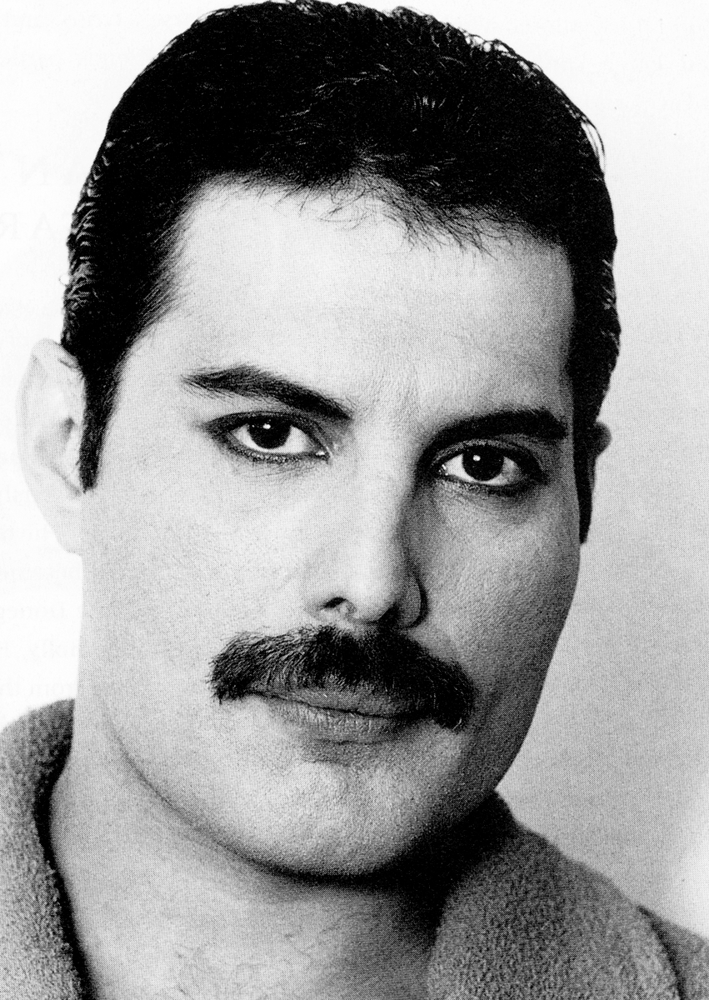

Slika
GIMP
GIMP
- Sliku sam izradio u programu GIMP. Koristi se za slobodno crtanje, uređivanje slika, mijenjanje veličine i obrezivanje itd.
- Program je otvorenog koda te je prva verzija izašla još davne 1996. godine.
- Za potrebe ovog projekta sam koristio najnoviju verziju 2.10.20
- Odabrao sam portret Freddia Mercurya iz 1984.

Original
Moja cartoon obrada

- Exportao sam još jednu verziju slike u kojoj sam original stavio u overlay mod te smanjio opacity na originalu
- Time sam dobio detalje po licu, laganu teksturu kože te sijenu

Verzija slike sa originalom u overlayu

Detaljan postupak izrade
Bonus:
Objašnjenje kako funkcionira overlay mod u GIMPU: Overlay mode inverts the pixel value of the lower layer, multiplies it by two times the pixel value of the upper layer, adds that to the original pixel value of the lower layer, divides by 255, and then multiplies by the pixel value of the original lower layer and divides by 255 again. It darkens the image, but not as much as with “Multiply” mode.